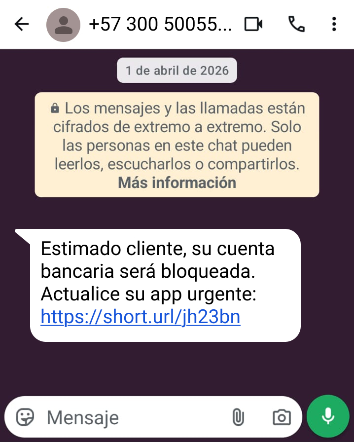
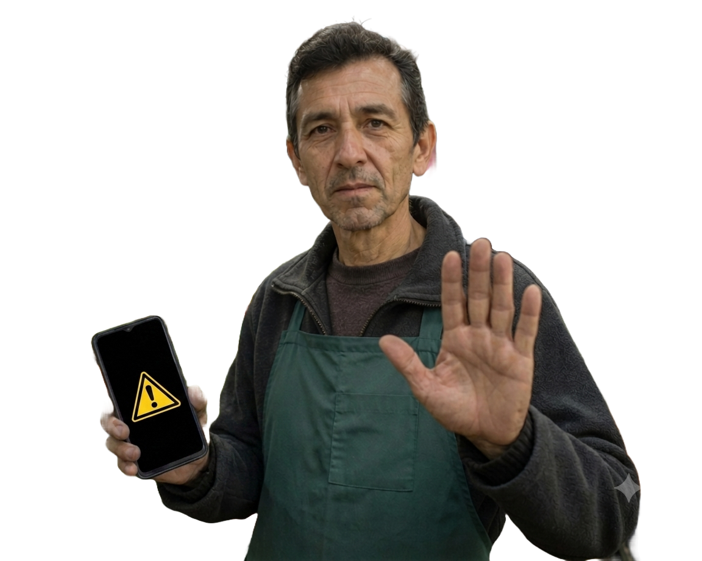
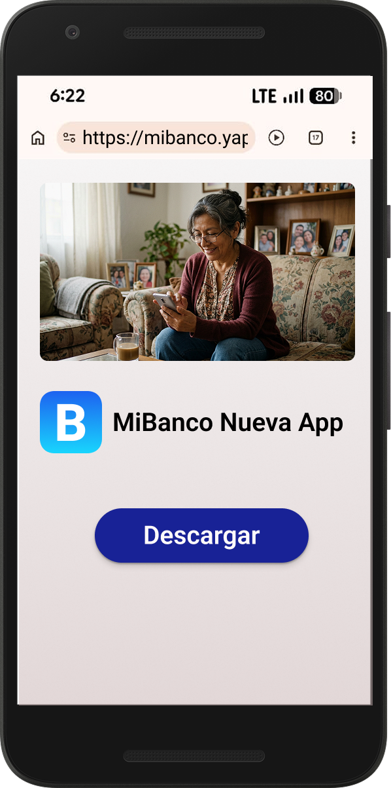
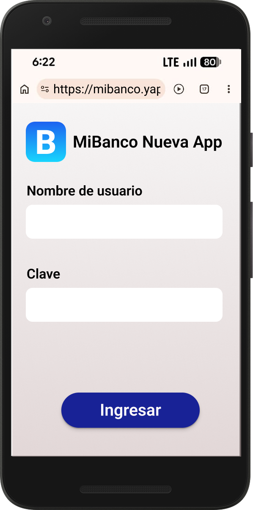
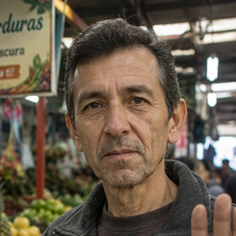
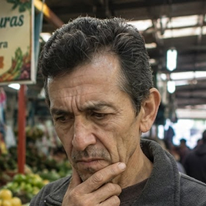
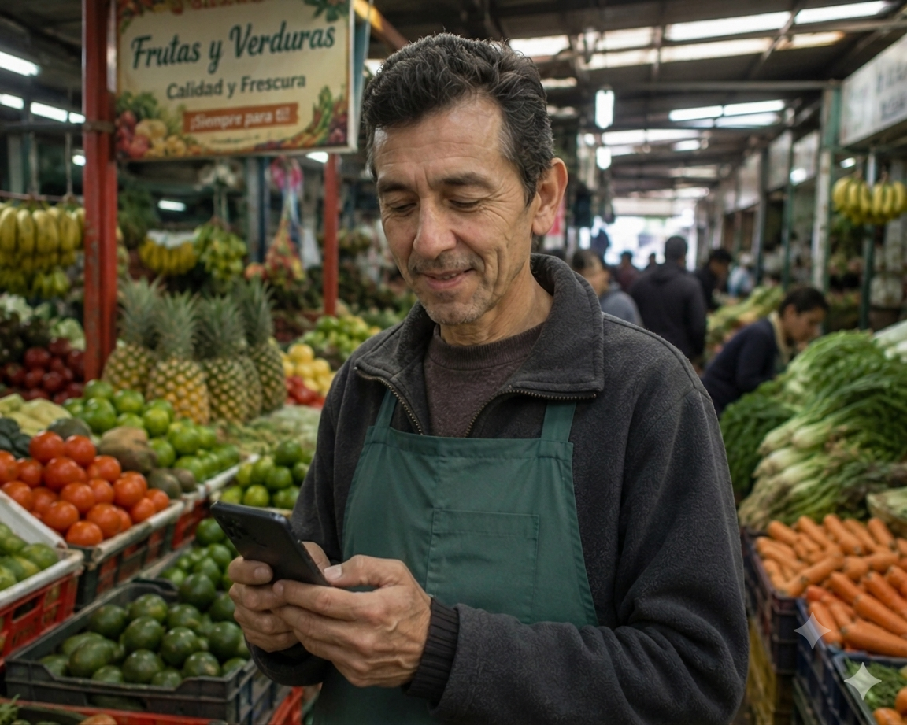

Historia interactiva
"Juan recibió este mensaje un lunes en la mañana. El enlace parecía ser del banco. Parecía urgente. Tuvo que tomar una decisión rápida."


Abrir ese enlace es el primer paso de la estafa. Los delincuentes crean páginas falsas que se ven exactamente igual al sitio del banco real. Siga la historia para ver lo que le pasó a Juan al cometer ese error.
Nunca abra links enviados por WhatsApp sin confirmar primero. Si tiene dudas, llame directamente a la línea del banco o visítelo en persona. Ahora vea cómo terminó la historia de Don Julio, que también recibió un mensaje así.

Descargó la app desde fuera de Play Store
Ingresó su usuario y claveJuan no había hecho esa transferencia.
Alguien usó su clave para robarle.


